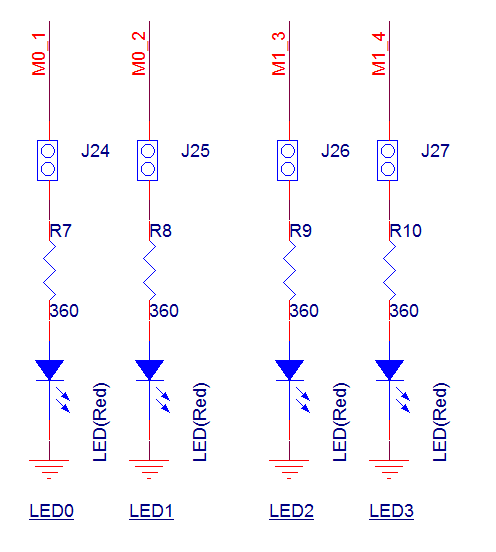
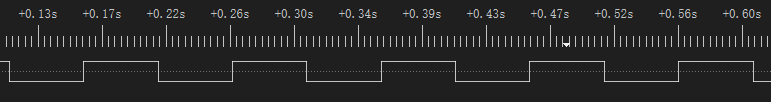
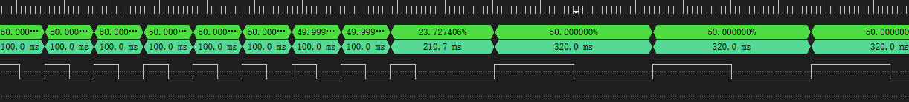

PWM
该示例使用 TIM，实现输出周期为 0.1s、占空比为 50% 的 PWM 功能。
为了便于观察，使用 P0_1（LED0）作为 PWM 输出，实现 LED0 的闪烁。
将 P0_1 接入逻辑分析仪，在逻辑分析仪内可观察到 PWM 的输出波形。
用户可以通过不同的宏配置来修改引脚信息，输出频率，是否动态改变频率等。具体宏配置详见 配置选项。
环境需求
该示例的环境需求，可参考 环境需求。
硬件连线
连接 P0_1 和 LED0 小灯，或连接 P0_1 至逻辑分析仪观察波形。
LED 驱动电路如下图所示。
{kind=link}

LED 驱动电路图
配置选项
可配置如下宏修改引脚定义。
#define PWM_OUT_PIN P0_1可配置如下宏修改 PWM 的频率和占空比。
#define PWM_PERIOD 100000 /*< Setting this macro to 100,000 means the output is a PWM wave with a period of 100,000 microseconds. The unit of this macro is microseconds (us). */ #define PWM_DUTY_CYCLE 50 /*< Setting this macro to 50 means the output is a PWM wave with a 50% duty cycle. */ #define PWM_HIGH_COUNT ((((PWM_PERIOD)*(PWM_DUTY_CYCLE*40))/100)-1) #define PWM_LOW_COUNT ((((PWM_PERIOD)*((100-PWM_DUTY_CYCLE)*40))/100)-1)
可配置如下宏去选择是否开启动态调整 PWM 频率的功能。
#define CONFIG_TIM_CHANGE_SRC_CLK 1 /*< Setting this macro to choose whether to enable the dynamic adjustment of the PWM frequency function. */
编译和下载
该示例的编译和下载流程，可参考 编译和下载。
测试验证
当 EVB 启动后，在 Debug Analyzer 工具内观察如下 log。
Start pwm test!
初始化完成，使能 TIM 后，TIM 开始输出 PWM 波形。通过逻辑分析仪看 P0_1 输出的 PWM 波形或者看 LED0 的闪烁情况。P0_1 输出周期为 100ms，占空比为 50% 的 PWM 波。
{kind=link}

TIM PWM 的输出波形
若配置宏
CONFIG_TIM_CHANGE_SRC_CLK为1，在程序中会修改 TIM 的时钟频率从 40MHz 到 12.5MHz。可以观察到在修改 TIM 的时钟频率后，PWM 的周期从 100ms 变为 320ms，占空比仍为 50%。PWM 波形如下图所示。
{kind=link}

修改时钟源后的 TIM PWM 的输出波形
代码介绍
该章节主要介绍示例中的初始化和相应功能实现的代码和流程说明。
源码路径
工程文件和源码路径如下：
工程路径:
sdk\samples\peripheral\timer\pwm\proj源码路径:
sdk\samples\peripheral\timer\pwm\src
初始化
外设的初始化流程可参考 General Introduction 中的 初始化流程 部分。
调用
Pad_Config()与Pinmux_Config()，配置对应引脚的 PAD 和 PINMUX 。void board_pwm_init(void) { Pad_Config(PWM_OUT_PIN, PAD_PINMUX_MODE, PAD_IS_PWRON, PAD_PULL_NONE, PAD_OUT_ENABLE, PAD_OUT_HIGH); Pinmux_Config(PWM_OUT_PIN, PWM_OUT_PIN_PINMUX); }
调用
RCC_PeriphClockCmd()，开启 TIM 时钟。对 TIM 外设进行初始化:
定义
TIM_TimeBaseInitTypeDef类型TIM_InitStruct，调用TIM_StructInit()将TIM_InitStruct预填默认值。根据需求修改
TIM_InitStruct参数，TIM 的初始化参数配置如下表。调用TIM_TimeBaseInit()，初始化 TIM 外设。
TIM Hardware Parameters |
Setting in the |
TIM |
|---|---|---|
Counter mode |
||
PWM mode |
||
PWM High Count |
|
|
PWM Low Count |
|
调用
TIM_Cmd()使能 TIM 外设，即可看到 LED 小灯闪烁，逻辑分析仪内可观察到 PWM 输出波形。
功能实现
若配置 CONFIG_TIM_CHANGE_SRC_CLK 为 1 ，在主函数中执行以下流程，修改 TIM 时钟源及其频率。
在使能 TIM 并延时 1s 后，失能 TIM 并修改时钟源，以便于观察 PWM 波形变化。
调用
pm_timer_freq_set()，修改 TIM 的时钟源为 PLL1，设置时钟源频率为 100MHz。若返回值为 0，代表频率设置成功。调用
TIM_ClkConfig()，设置 TIM 的时钟源为 PLL1，分频为 8 分频。此时 TIM 的时钟源频率为 100MHz/8 = 12.5MHz。重新使能 TIM，观察修改时钟源频率前后的波形变化。
执行以下步骤获取设置的时钟源频率：
调用
TIM_ClkGet()，获取设置的 TIM 时钟源信息与分频系数。注意，该函数的时钟源与分频系数为输出变量，需要将时钟源与分频系数变量的地址传入。若时钟源为 PLL1 或 PLL2，调用
pm_clock_src_freq_get()，获取设置的 PLL 时钟源实际频率。得到时钟源频率与分频系数后，即可计算实际的时钟源频率。例如设置 TIM 外设的时钟源为 PLL1 100MHz，得到的分频系数为 0x3，可以根据
TIMClockDiv_TypeDef中的宏定义命名去查看实际的分频系数。0x03 对应的是TIM_CLOCK_DIVIDER_8，所以 TIM 的频率为 100MHz/8 = 12.5MHz。
备注
调用 pm_clock_src_freq_get() 和 pm_timer_freq_set() 时，需要添加头文件 clock.h 。
platform_delay_ms(1000);
TIM_Cmd(PWM_TIMER_NUM, DISABLE);
/* Change TIMER SRC CLK to PLL1(100MHz) */
int32_t ret = pm_timer_freq_set(CLK_PLL1_SRC, 100, 100);
DBG_DIRECT("ret = %d", ret);
/* Set timer clock src pll1 to 8 divider (12.5MHz) */
TIM_ClkConfig(PWM_TIMER_NUM, TIM_CLOCK_SRC_PLL1, TIM_CLOCK_DIVIDER_8);
TIM_Cmd(PWM_TIMER_NUM, ENABLE);
/* Get timer clock src */
TIMClockDiv_TypeDef tim_clk_div = 10;
TIMClockSrc_TypeDef tim_clk_src = 10;
uint32_t actual_clock_src_freq = 0;
TIM_ClkGet(PWM_TIMER_NUM, &tim_clk_src, &tim_clk_div);
DBG_DIRECT("clk src = %d, clk div = %d", tim_clk_src, tim_clk_div);
/* If clk src = PPL clock, it can use pm_clock_src_freq_get() to get PLL clock freq */
if (tim_clk_src == TIM_CLOCK_SRC_PLL1)
{
actual_clock_src_freq = pm_clock_src_freq_get(CLK_PLL1_PERI);
}
else if (tim_clk_src == TIM_CLOCK_SRC_PLL2)
{
actual_clock_src_freq = pm_clock_src_freq_get(CLK_PLL2);
}
DBG_DIRECT("actual_clock_src_freq = %d", actual_clock_src_freq);
See Also
相关 API Reference 请查看：